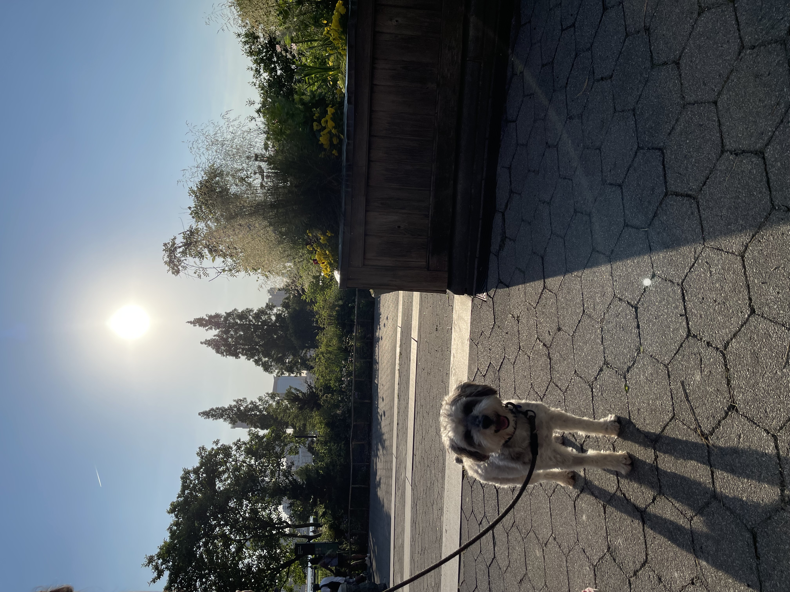
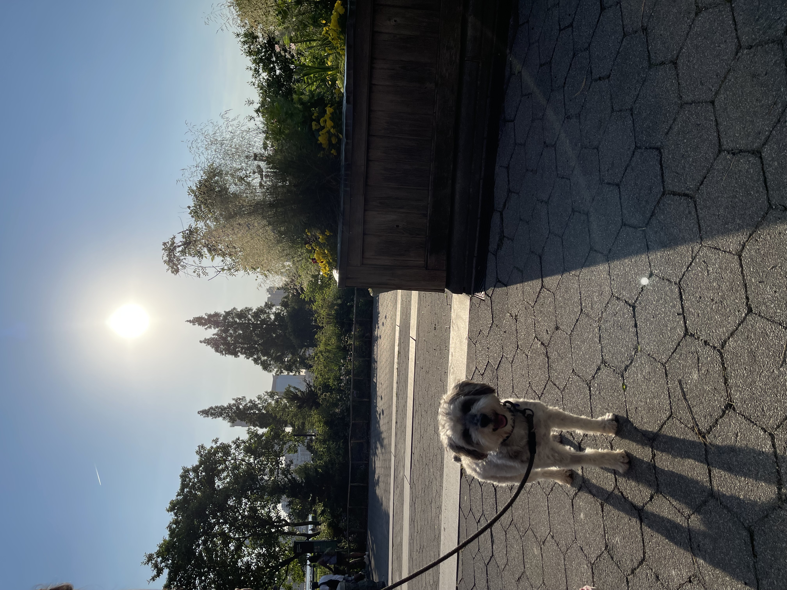

DOG SITTING
 



These are a few of the dogs that have lived with me over the summer! I usually dog-sit small or medium dogs that don't shed, since I am allergic to most pets. I love walking and spending time with them.
VIDEO GAMES


These are the video games I play regularly on PC!
Here is a short video that my friend clipped a long time ago (the silver days) in Valorant. My username is "thunder cat."
WRITING
This is the cover illustration for a short story I submitted to the Brooklyn Public Library's online writing contest in May 2022. The story follows a young woman who overcomes her fear of failure. It won 3rd place and is currently published in the New Utrecht branch and the BKLYNfuture blog.
I write a lot in my free time, but this was just one work I wanted to share here. Writing was one of my first and favorite hobbies. Despite all the new things I learn and try, nothing will ever beat writing for me!
MUSIC
I love listening to music and playing the violin! My top 3 favorite artists are Kendrick Lamar, Tyler the Creator, and Thunder cat. I also enjoy listening to Marvin Gaye, Joey Bada$$, Tupac, SZA, Doja Cat, Silk Sonic, Queen, and Michael Jackson.
It's hard to pick a favorite song, so I don't. However, if I REALLY had to pick, it would be "SWEET / I THOUGHT YOU WANTED TO DANCE" by Tyler the Creator. Give it a listen below!
What's your favorite song?